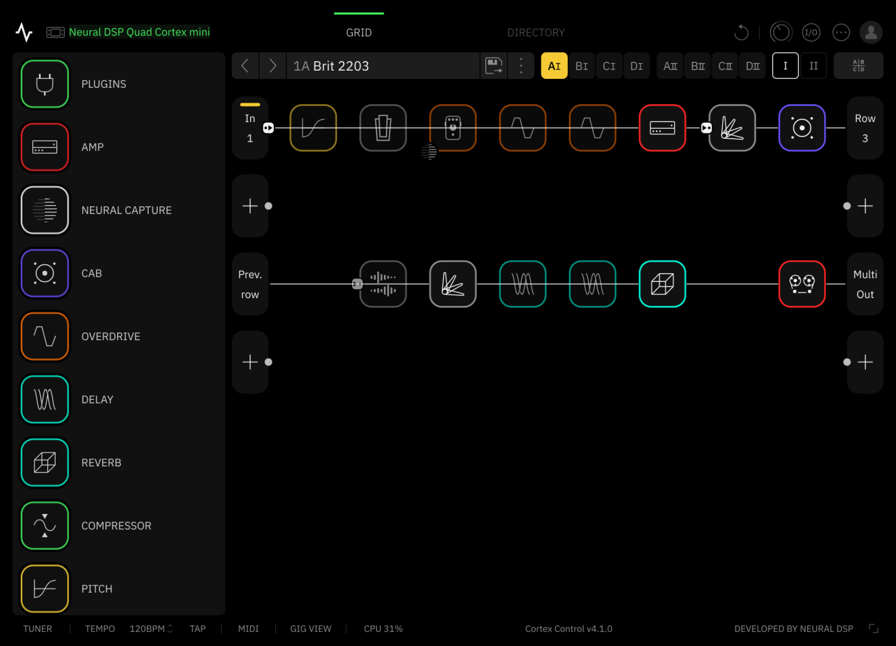
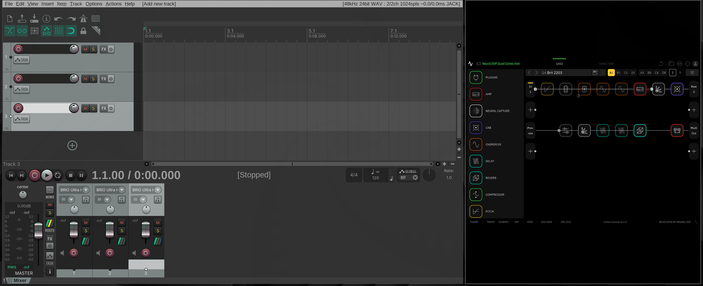

Stompgate runs Neural DSP's Cortex Control editor on Omarchy Linux through Proton, with the Quad Cortex connected over USB. No Windows VM. It tiles like a native window and adds keyboard shortcuts, a bar widget and MIDI controls.

Runs inside gamescope, so the whole editor scales into any tile without being cut off. Let your DAW take the big tile.
02 — KEYS ↓Show or hide the editor, toggle the tuner, step through scenes and modes, and press footswitches, with feedback on Omarchy's on-screen display.
03 — BAR ↓Appears while the editor is open. Shows the QC's status and gives quick controls for modes, scenes, footswitches, the tuner and audio levels.
04 — MIDI ↗Scene, tuner, mode, tap tempo and footswitch control, sent straight to the QC from the keyboard, the widget or a terminal.
05 — MENU ↗Cortex Control in the app launcher, and Stompgate entries under Trigger and Learn in the Omarchy menu.
06 — DOCTOR ↗stompgate-doctor checks the whole setup, from Proton and the udev rule to the QC's USB, MIDI and audio, and says what to fix.

# recommended: lets the editor tile at any size $ sudo pacman -S gamescope $ git clone https://github.com/roninjanitor/stompgate $ cd stompgate $ makepkg -si
Installs the stompgate commands, the launcher entry and a udev rule that matches only the Quad Cortex's USB IDs. It asks for your password once.
$ stompgate-setup # no sudo $ omarchy restart shell # loads the bar widget
Setup installs Cortex Control for you; there's nothing to download or run by hand. It fetches the official Cortex Control 4.1.0 installer straight from Neural DSP, checks it by hash, and lets you pick Neural DSP's setup wizard, which shows their license, or a silent install if you've already accepted it. It also downloads a pinned GE-Proton, keeps everything in your home folder, and adds the window rule, shortcuts, bar widget and menu entries. Takes a few minutes.
Why 4.1.0 and not the latest? Each release is tested under Proton before Stompgate supports it, so setup refuses any other version. Already downloaded 4.1.0? Setup uses the copy in ~/Downloads.
Plug it in with a USB data cable and turn it on. For the scene, tuner, mode and footswitch controls, on the QC go to Settings → Device → MIDI, turn on MIDI over USB, and set the channel to 1 or Omni.
Press SuperShiftQ, or find Cortex Control in the app launcher. The sine wave appears in your bar. If anything looks off, run stompgate-doctor; it checks every piece and says what to fix.
Your system Wine is never touched. Everything Stompgate changes is listed, and stompgate-uninstall removes it.
Not tested yet: the full-size Quad Cortex, AMD and Intel graphics, loading presets over MIDI, and REAPER through JACK.
Tried it on different hardware? Send a compatibility report →